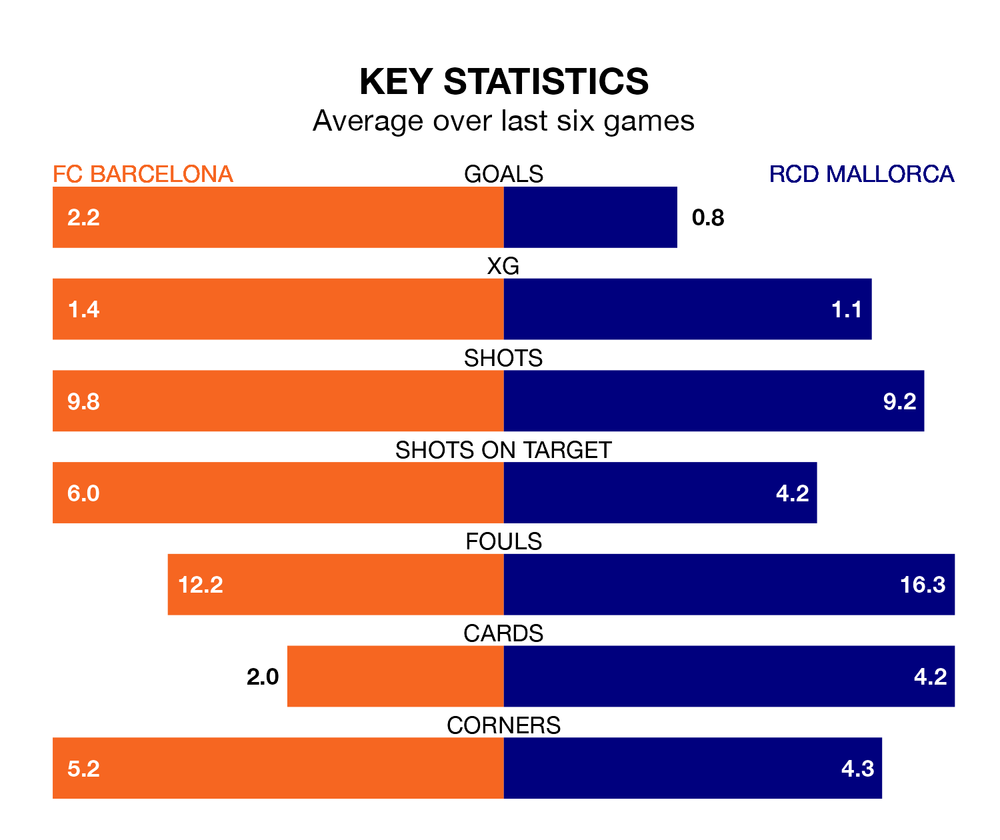

FC Barcelona face RCD Mallorca on Friday seeking to protect their long unbeaten run in La Liga.
Barcelona are unbeaten in six, with four wins and two draws, ahead of the 8pm kick-off.
They face a Mallorca team who have won two and drawn one over the same number of games.
With 56 goals in 27 games so far this season, Barcelona are the league's joint-second-highest scorers with 2.1 goals per game. And they are conceding at an average rate, letting in 34 goals at a rate of 1.3 per game.
Mallorca, meanwhile, are below average scorers, with 0.9 goals per game, compared to a league average of 1.3. They have conceded 1.3 goals per game.
The home team are third in the table after 27 games, of which they have won 17 and drawn seven, earning 58 points.
The visitors are 12 places behind Barcelona in 15th, with five wins and 12 draws putting them on 27 points.
In the last 10 years, Barcelona and Mallorca have played each other on seven occasions. Barcelona won six of them and they drew once.
On average, Barcelona scored 2.6 goals and Mallorca 0.7 in those matches.
Their last meeting was on September 26, when they played out a 2-2 draw.
In Robert Lewandowski, Barcelona have one of the league's sharpest shooters so far this season. He has notched 12 goals in 25 appearances, to sit sixth in the scoring charts.
Mallorca's top scorers, with five goals each, are Abdón Prats and Vedat Muriqi.
Barcelona's last match was on Sunday, a 0-0 draw against Athletic Club Bilbao.
Mallorca beat Girona 1-0 last time out, also on Sunday, with José Manuel Copete on the scoresheet.
Friday's match will be refereed by Javier Iglesias Villanueva, who has taken charge of 14 La Liga games so far this season, issuing one red card and booking 65 players. He has awarded four penalties.
The last Mallorca game Iglesias Villanueva refereed was the 1-0 loss at home against Real Betis on January 27. He is yet to oversee a match featuring Barcelona this season.
Updated: 09:34 (UTC), 08/03/24